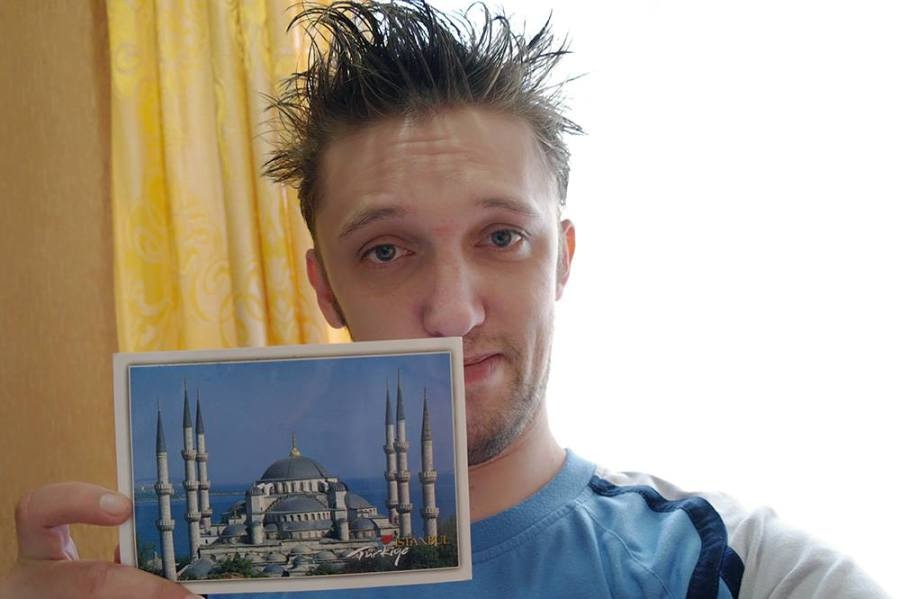
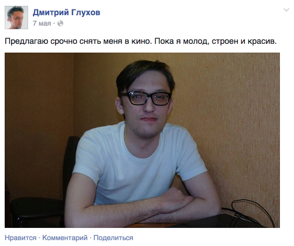

Дмитрий Глухов работал в моей организации много лет назад. Лет, наверное, 10. Я тогда начинал профессионально разрабатывать интернет-сайты, а Дима работал продавцом в «Планете «Стерео». Он тоже увлекался вебом, я ездил к нему в магазин знакомиться, а вскоре он стал работать у нас «в штате».
Период в бизнесе тогда был странный, я плохо понимал экономику, и примерно через полгода наши с Димой пути разошлись. Я остался в офисе на Октябрьском, а он плавно перекочевал в Гудлайн под крыло Максиму Колпакову. Мы сохранили приятельские отношения, изредка переписывались, иногда встречались и по работе и просто поговорить «за жизнь». Однажды мы как-то часа полтора рассуждали у меня в машине, куда двигаться программисту. У Димы была куча планов, он даже собирался делать собственную платформу для сайтов «Большая улица».
Платформу он потом сделает, на ней сделает несколько собственных проектов вроде Фантастик.ру и Адреналинхантер. Кроме этого активно поучаствует в разработке многих старых проектов студии А42.
Совместно довелось поработать нам ещё однажды. Новый проект мне тянуть не позволяла квалификация, я спросил несколько раз совета в скайпе у Димы, а потом и вовсе порекомендовал заказчика взять его на работу. Поработав пару месяцев, Дима сказал мне, что продолжать работать не может — «нужно ложиться на курс». «Ложиться на курс» означало невозможность не только работать.
Диагноз Диме поставили, когда его жена, Ольга, находилась на 6 месяце беременности. У них уже был 6-летний сын, тут ещё дочь. Всё как у людей. Мы реже стали видеться оффлайн, но чаще стали переписываться в скайпе. Разговаривали чаще о профессиональных делах, бывало и просто о жизни. Болезнь не сломала его, хотя он и пытался выглядеть циничным человеком.
Иногда на него находило.
[21.11.13, 22:09:46] Глухов Дмитрий: Ты говоришь о "зоне комфорта" и "новом опыте" (ну, так, вообще говоришь). Хочешь настоящее испытание для сильных духом? Скатайся в кемеровскую онкологию, попробуй пообщаться с больными в химиотерапевтическом стационаре. Если разговоришь и не впечатлит, просто сходи в детское отделение. Жопа будет даже не в больных и их настроении. Жопа будет в регистратуре.
[21.11.13, 22:10:48] Шипачев Максим: Дим, я не ищу эмоций, а из зоны комфорта выхожу, чтобы развиваться
[21.11.13, 22:11:06] Шипачев Максим: было бы странно выходить оттуда просто так. сродни онанизму и мазохизму
[21.11.13, 22:12:15] Глухов Дмитрий: Буду прям. Можно быть Альбертом Эйнштейном, натянувшим одеяло на глаза. А можно одеяло так чуть-чуть опустить и познакомиться с ещё одним аспектом реальности.
[21.11.13, 22:12:44] Глухов Дмитрий: Да, ты не Путин )
[21.11.13, 22:13:03] Шипачев Максим: Буду прям. Я не вижу смысла. Воображение и опыт, думаю, довольно достоверно рисует картину возможного
[21.11.13, 22:15:12] Глухов Дмитрий: Бывает такой опыт, который невозможно представить. Каким бы сильным не было воображение. Дети с нарисованными на люах маркерами крестами, бегущие с облучения в местный магазинчик за пирожками... Вот он ЭКСПИРИЕНС
[21.11.13, 22:15:18] Глухов Дмитрий: *лбах
[21.11.13, 22:16:14] Глухов Дмитрий: и берут на всех в детском отделении. и обсуждают, а, мол, Иванов-то который неходячий просил с капустой, а их нет.
[21.11.13, 22:17:44] Глухов Дмитрий: просто мне плакать хочется, что лишь единиц и "по-блату" (ну, это не в укор совсем) можно спасать, когда их тысячи или миллионы.
Но в основном — за жизнь.
Когда родилась дочь, Дима с Ольгой планировали обменять КГТ на однёшку. От помощи с трудоустройством и последующей справкой о доходах он отказался. С ипотекой не заладилось. Так и остались в КГТ на бульваре Строителей.
В эту КГТ я прошлой весной отправлял открытку из Стамбула. Дима пробовал собирать такие открытки, отправленные из разных мест нашей планеты.

В начале лета, в июле, Дима пропал. Последняя его запись в фейсбуке датирована 10 июня.
Нельзя сказать, что у него в последнее время было много друзей. Телефон стал недоступен, как-то беспокоить по адресу никому не хотелось. Все, конечно, переживали, но информации особо ждать было неоткуда, признаться я даже не знал, что димину жену зовут Ольга. Новости появились только 21 сентября. Димы не стало 10 июля.
Я написал в его скайп, напросился на встречу.
В КГТ, откуда Диму увезли на неделю в хоспис, по-прежнему живёт его жена с его сыном и дочкой. Ольга всё ещё носит чёрное платье. Но держится, ведь это случилось не сразу. Работает, отводит по утрам дочь в сад, а сына в школу. Сын похож на отца. Ольга говорит, что «кажется они ещё не понимают», и что «говорят о нём в настоящем времени».

Выводы? Выводов нет. Просто один человек из жизни.
Помочь? Помочь можно деньгами. Было бы клёво, если бы эта помощь была небольшой, но периодической — Ольге и детям предстоит, уверен, долгая и не самая простая жизнь.
Счёт в Сбербанке: 639002269017622584, Глухова Ольга.